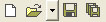
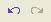
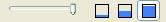
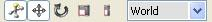
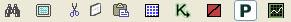
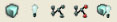
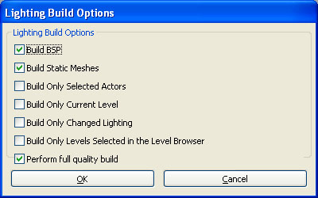
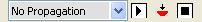
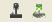

UDN
Search public documentation:
MainEditorToolbarJP
English Translation
中国翻译
한국어
Interested in the Unreal Engine?
Visit the Unreal Technology site.
Looking for jobs and company info?
Check out the Epic games site.
Questions about support via UDN?
Contact the UDN Staff
中国翻译
한국어
Interested in the Unreal Engine?
Visit the Unreal Technology site.
Looking for jobs and company info?
Check out the Epic games site.
Questions about support via UDN?
Contact the UDN Staff
メインエディタ ツールバー
本書の概要:UnrealEd のメインツールバーにある制御ボタンの概要の簡潔な説明。 本書の変更記録: DaveBurke? により作成。- メインエディタ ツールバー
- 概要
- ツールバー
- マップ
- Undo/Redo (元に戻す/やり直し)
- ビューポート カメラ
- ウィジェット
- その他
- Search for actors (アクタを検索)
- Toggle Disable (全画面表示のトグル)
- Cut selected actors to clipboard (選択したアクタをクリップボードに切り取る)
- Copy selected actors to clipboard (選択したアクタをクリップボードにコピー)
- Paste actors from clipboard (クリップボードからアクタをペースト)
- Open Kismet (Kismet を開く)
- Toggle brush polys (ブラシ ポリにトグル)
- Toggle prefab lock (プレハブのロックをトグル)
- ビルド機能
- Propagation (プロパゲーション)
- Set propagation target (プロパゲーション ターゲットの設定)
- Start sending perspective position to propagation target (パースペクティブ ポジションをプロパゲーション ターゲットに送信開始)
- Set the remote player position to the current viewport (現在のビューポートにリモート プレーヤーのポジションをセット)
- Stop sending perspective position to propagation target (プロパゲーション ターゲットにパースペクティブ ポジションの送信を停止)
- 各種起動ボタン
概要
UnrealEdのツールバーに表示されている制御ボタンを、左から右の順で簡潔に説明します。ツールバー
マップ

Create a new map (新しいマップを作成)
新しいマップを作成します。まず、開いているレベルのうち、保存されていないレベルおよび最終保存以後に変更されたマップがあれば、それを保存するよう求めるメッセージが表示されます。Open an existing map (既存のマップを開く)
既存のマップを開きます。開いているレベルのうち、保存されていないレベルがあれば、保存を求めるメッセージが表示されます。このボタンの横にあるドロップダウン矢印をクリックすると、最近開いたマップのリストが表示されます。Save current level (現在のレベルを保存する)
「現在のレベル」を保存します(レベル ブラウザで指定された通り)。現在のレベルが未保存であるか、または最終更新から変更されている場合にのみ保存します。ソースコントロールが有効になっていて、カレントのレベルが保存されるように、ソースコントロールからチェックアウトされる必要がある場合は、パッケージをチェックアウトするように促されます。Save all levels (すべてのレベルを保存)
未保存のレベル、または最終更新から変更されているレベルを残らず保存します。ディスクで書き込み可能なパッケージにあるレベルのみを保存します。ソースコントロールからチェックアウトするようにしないでください。Undo/Redo (元に戻す/やり直し)

一部の操作の後では、元に戻る/やり直しを実行できないことにご注意ください (例えば、マップを開く、レベルを構築するなど)。Undo last action (最後のアクションを元に戻す)
最後のアクションを元に戻します。Redo previously undone action (最後に元に戻した動作をやり直す)
最後に元に戻した操作をやり直します。ビューポート カメラ

Distance to far clipping plane (後方クリッピング面までの距離)
パースペクティブ レベル ビューポート内の後方クリッピング面距離を制御します。スライダーを左に動かすとクリッピング面がカメラの近くに移動します。大きくて複雑なレベルのパースペクティブ ビューを描画するときに、エディタ パフォーマンスが向上します。Slowest/Normal/Fastest camera speed (最低速/標準速/最速カメラスピード)
レベル ビューポート内のカメラが、マウスの動きに応じてパンする速度を調整します。ウィジェット
アクタが選択されているときに表示されるツール。ウィジェットで表示されたハンドルを選択してドラッグすることで、選択されているアクタを変形できます。
Show widget (ウィジェットを表示)
ウィジットを有効/無効にします。Use translation widget (変換ウィジットを使用)
変換モードのとき、ウィジットは選択されているアクタを変換 (移動) します。Use rotation widget (回転ウィジットを使用)
ウィジットを回転モードに設定します。回転モードのとき、選択されているアクタはピボット点を中心に回転します。*Use uniform scaling widget (均等スケーリング ウィジェットを使用)
ウィジットをスケーリング モードに設定します。スケーリング モードのとき、選択されているアクタはX、Y、およびZ 方向に均等にスケールされます。*Use non-uniform scaling widget (非均等スケーリング ウィジットを使用)
ウィジェットを非均等スケーリング モードに設定します。このモードのとき、個別のウィジット ハンドルをドラッグすると、選択されているアクタは特定の方向にスケールされます。非均等スケーリング ウィジットを有効にすると、ウィジェットの参照座標系が自動的に Local (ローカル) に変更される点に注意してください。Reference coordinate system (参照座標系)
参照座標系 (RCS) は、ウィジット操作が適用される関係枠を指定します。たとえば、アクタが回転されたとき RCS が「Local」に設定されている場合、変換ウィジットを経由してアクタを変換すると、グローバル X/Y/Z 方向ではなく、アクタの回転方向に動くことになります。その他

Search for actors (アクタを検索)
クリックすると、[Search For Actors] (アクタを検索) ダイアログが開きます。このダイアログを利用して、現在レベルブラウザ内で表示されているレベル内にある特定のアクタを検索することができます。Toggle Disable (全画面表示のトグル)
エディタの「全画面表示」モードのオンとオフを切り替えます。オンになっている場合、UnrealEd が画面いっぱいに表示され、タイトルバーが非表示になります。Cut selected actors to clipboard (選択したアクタをクリップボードに切り取る)
選択したアクタをレベルから切り取って、クリップボードにコピーします。Copy selected actors to clipboard (選択したアクタをクリップボードにコピー)
選択されたアクタをクリップボードにコピーします。Paste actors from clipboard (クリップボードからアクタをペースト)
選択されたアクタをクリップボードからレベルにペーストします。アクタは元々コピー/カットされた場所にペーストされます。Open Kismet (Kismet を開く)
レベル ブラウザで指定された、「Current (現在の) レベル」のKismet を開きます。Toggle brush polys (ブラシ ポリにトグル)
これがオンの場合、ビルダ ブラシが選択されたときに、ビルダブラシのポリゴンが塗りつぶされた状態で描画されます。Toggle prefab lock (プレハブのロックをトグル)
有効になっている場合 (デフォルト)、あるprefab に属しているアクタを個別に選択できません。1 つのprefab メンバを選択すると、prefab 全体を選択することになります。ビルド機能

Build geometry for current level (現在のレベルのジオメトリをビルドする)
レベル ブラウザで指定された、「Current (現在の) レベル」にジオメトリをビルドします。Build lighting (照明をビルド)
以下の写真のような [Lighting Build Options] (照明のビルド オプション) ダイアログが表示されます。
Build paths for visible levels (表示されているレベルのパスをビルドする)
表示されている全レベルのパスをビルドします。実行すると、ビルド時表示されていないパスを含むレベル内に無効な情報が生じる原因となることに注意してください。Build cover nodes for visible levels (表示されているレベルのカバーノードをビルドする)
表示されている全レベルのカバーノードをビルドします。実行すると、ビルド時に表示されていないカバーノードを含むレベル内に無効な情報が生じる原因となることに注意してください。Build all for visible levels (表示されているレベルのすべてをビルドする)
表示されている全レベルのジオメトリ、照明、パス、およびカバーノードをビルドします。実行すると、ビルド時表示されていないレベル内に無効情報が生じる原因となることに注意してください。Propagation (プロパゲーション)
「プロパゲーション」を使用することで、エディタ内で行った変更点が PC 上で実行されているゲーム、または XBox360 あるいは PS3 開発キット上のゲームに伝達されます。
Set propagation target (プロパゲーション ターゲットの設定)
プロパゲーション ターゲットを設定します。オプションには、[Local standalone] (PC)、Xenon および PS3 があります。デフォルトは [No propagation] です。これは、エディタの変更が実行中のゲームに伝達されないことを意味します。Start sending perspective position to propagation target (パースペクティブ ポジションをプロパゲーション ターゲットに送信開始)
これを有効にした場合、エディタのパースペクティブ レベル ビューポート内のカメラを移動すると、プロパゲーション ターゲット上で実行中のゲーム内のカメラ位置が移動します。Set the remote player position to the current viewport (現在のビューポートにリモート プレーヤーのポジションをセット)
これを有効にした場合、エディタのパースペクティブ レベル ビューポート内のカメラを移動すると、プロパゲーション ターゲット上で実行中のゲーム内におけるプレーヤーの位置が移動します。Stop sending perspective position to propagation target (プロパゲーション ターゲットにパースペクティブ ポジションの送信を停止)
パースペクティブ カメラの伝達を無効にします。各種起動ボタン

いずれのボタンも CTRLキー + クリック によって、傍観モードで起動することができます。